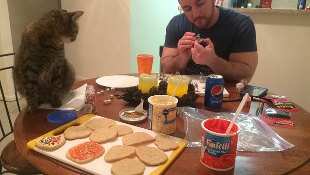

The time and effort spent on this is dedicated to the person who has always loved me the most and longest, my mother.
Credit to my sister for finding these photos and uploading to facebook. Without her, there would be many fewer pictures on facebook, of everyone she knows..
Although I cannot recall this, obviously from my age, it still warms my heart to see my mom looking genuinely happy.
What I learned much later in life is that my mom was at her happiest when she made her children happy. I, like many kids, loved dinosaurs..
I would have spiked hair, orange hair, buzzed hair, "gangsta'" fashion, become The Orange Kid, and later known as Pajama Pants at my local gym. I was, and still am, a very unique, if not weird, person. My mom let me stand out and this taught me many lessons in understanding, acceptance, tolerance, and empathy. My mom allowed me to be myself, much more than other parents let their children, and for that I will be forever grateful.
That allowance gave me the ability to do things others might look at as abnormal, nerdy, or some other form of negative thought. If it was positive in my eyes, why not try it?
I became a compilation of many "types" of people. Some "types" that parents could be quite proud of.
And other types that maybe would not inspire pride.. (This was 5 years ago, those 21 year old days.. she did not approve of this behavior, but she'd still offer me soup the next day)

My mom can sometimes come off as a bit intimidating, tough, and maybe heartless at times, but if you got to truly know her, you'd learn how deep her heart actually is. My mom was against pets, until I found Buttercup, and since that day (21 years ago), she has had a hard time saying no to any pet adoptions. I genuinely cannot tell you how many we have had as a family.
My mom, as long as I can remember, has told me, "If you ever get yourself arrested, don't expect me to bail your ass out!" Contrary to what that sounds like, she has always been there for me. When I was in my first accident that was completely my fault, she was there and just happy that I was okay. When I dropped out of college, she was there to give me a home again. When I went back to school and had a 4.0, she was there to reward me. She was, and still is, a good mom to both her children and her pets. Without a mom like her... I don't even want to think about it actually. So as long as I'm breathing, I appreciate having her as my mother. I LOVE MY MOM <3